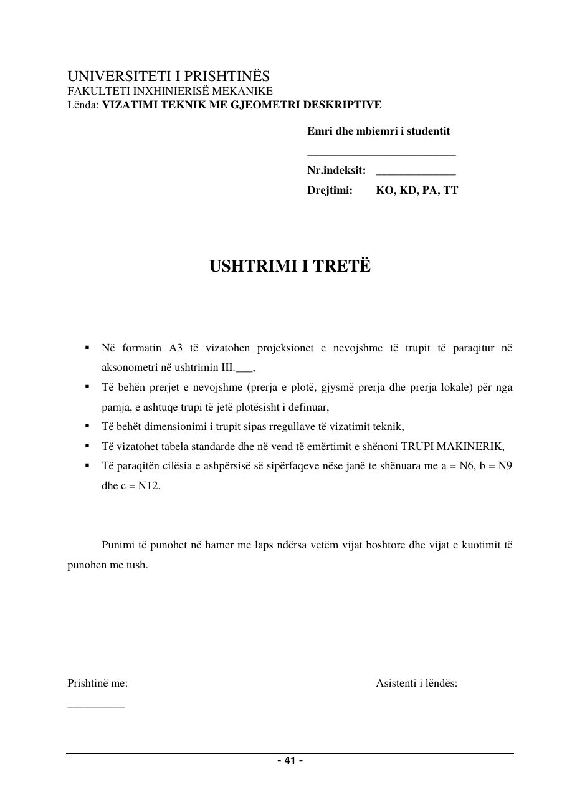
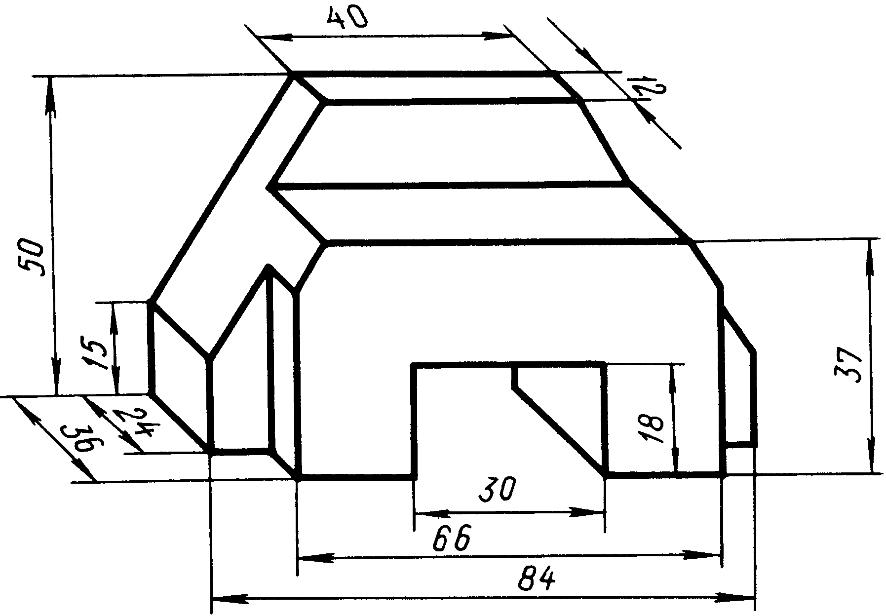

Animacioni vizatimi hap pas hapi, 13 hapa
Hap në dritare të plotë ↗
Në projektor hape në dritare të plotë; tastet ← → ndërrojnë hapin, hapësira luan/ndal.
Faqet e librit

Trupi makinerik
Në formatin A3 të vizatohen projeksionet e nevojshme të trupit të paraqitur në aksonometri; të bëhen prerjet e nevojshme (prerja e plotë, gjysmë prerja, prerja lokale) që trupi të jetë plotësisht i definuar; kuotimi sipas rregullave të vizatimit teknik; tabela standarde me emërtimin TRUPI MAKINERIK.
Të dhënat: Përmasat sipas figurës, në mm; ashpërsia e sipërfaqeve a = N6, b = N9, c = N12

Në projektor hape në dritare të plotë; tastet ← → ndërrojnë hapin, hapësira luan/ndal.
